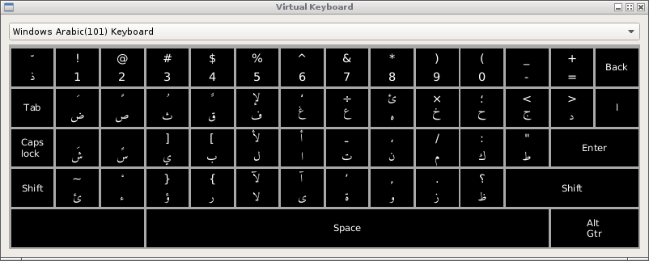
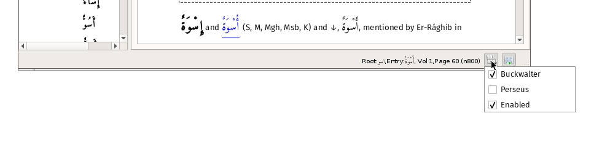

Entering Arabic text
There are two methods built into the program : virtual keyboards and keymaps.
Virtual keyboards
The virtual keyboards are activated using the 'Show keyboard' button on the various search dialogs. Two layouts are provided - Windows Arabic 101 and 'Digital Orientalists'. Tools are provided to let build you own should you wish.
To use the virtual keyboard simply click on the required character. The 'Shift' key will stay active until another key is clicked; use this method to input the 'upper' row of characters.

Keymaps
Using keymaps allows your native keyboard to output Arabic characters using a 'map' - a key, or a sequence of keys, is converted into the mapped Arabic character. The default keymap is called 'Buckwalter' and corresponds (almost) to Tim Buckwalter's transliteration scheme (External reference). With this map active, typing 'kataba' would output كَتَبَ
Details of the default Buckwalter keymap are here
Keymaps may be enabled via the shortcut Ctrl+K,E and disabled by Ctrl+K,D, or via the status line:
